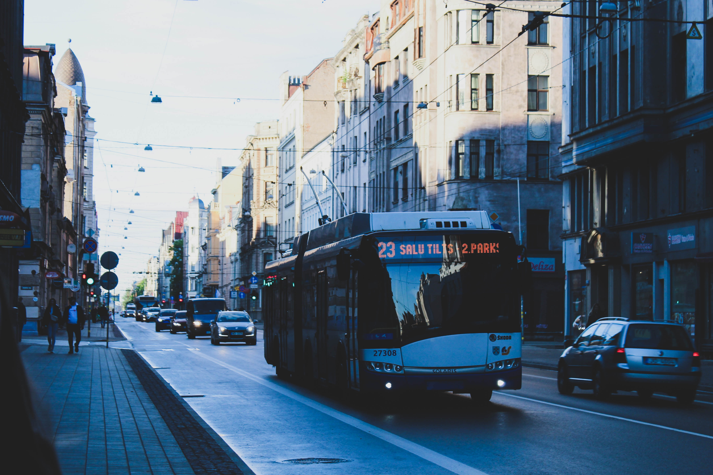

Aleksandra Čaka iela
Kā iepriekš bija minēts, Zemitānu tilts savieno Ieriķu ielu ar Aleksandra Čaka ielu. Kā jau tas ir saprotams no nosaukuma, tā tikusi nodēvēta par godu slavenajam latviešu dzejniekam Aleksandram Čakam. Kad laukā ir siltāks laiks, man patīk izkāpt dažas pieturas pirms gala pieturas centrā, un apmeklēt starp A. Čaka, Matīsa un Artilērijas ielu atrodamo atrodamo Ziedoņdārzu, kurā par godu tam pašam Čakam 1981. gadā uzstādīts piemineklis.
Tāpat netālu no Ziedoņdārza atrodas Rīgas Centra sporta kvartāls, kuru iecienījuši visdažādāko sporta veidu piekritēji. Man ir liels prieks, ka Rīga turpina pilnveidoties un realizēt šāda veida projektus. Tāpat arī jāpiemin, ka pati A. Čaka ielas ceļu infrastruktūra arī nesen tikusi pilnībā atjaunota.